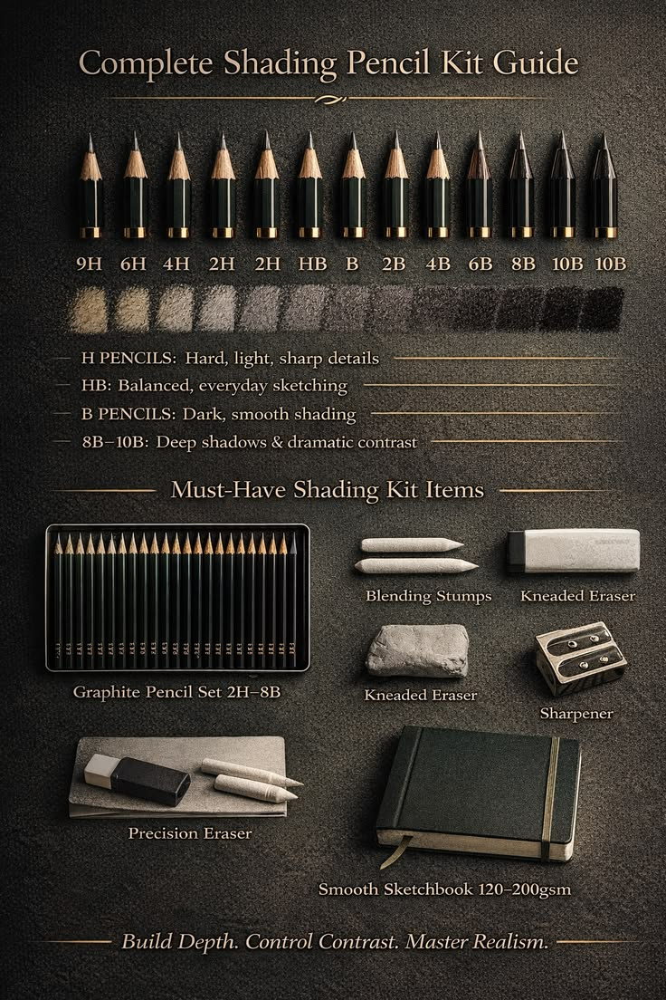
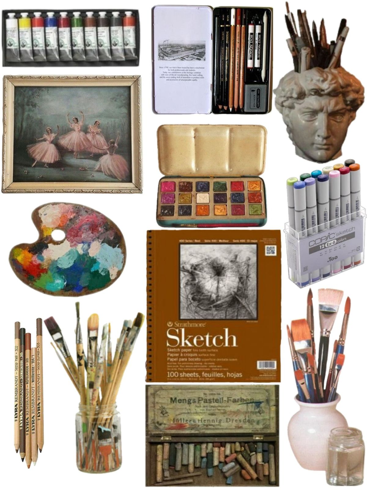

Common Types of Paint
- Watercolour
- Acrylic
- Oil Paint


Watercolour paints are light and transparent. Acrylic paints dry quickly and are easy for beginners. Oil paints are used by professional artists and take longer to dry.


Watercolour paints are light and transparent. Acrylic paints dry quickly and are easy for beginners. Oil paints are used by professional artists and take longer to dry.